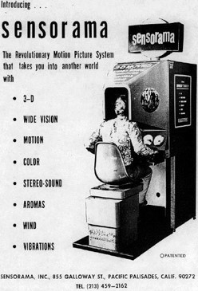
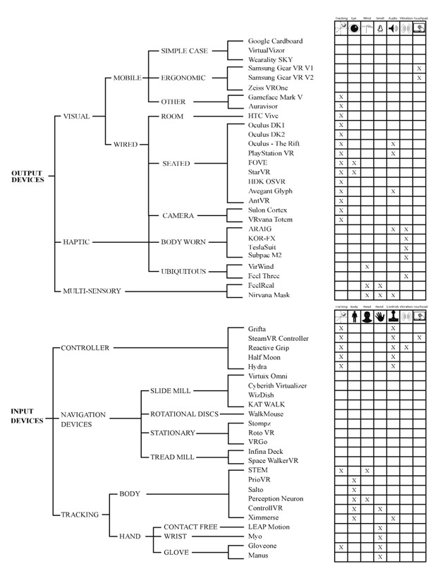

IT Technologies: Virtual Reality
Virtual reality is a technology that has been actively experimented and developed for use in the gaming industry over the past two decades. Its development has brought us closer than ever to the virtual world, and it has the potential to do much more than that.
What does it do?
According to Burdea and Coiffet [1], Virtual Reality (VR) is defined as “a high-end user-computer interface that involves real-time simulation and interactions through multiple sensorial channels…” while Sutherland [2] suggested that the end-goal of such an interface would be to create “a room within which the computer can control the existence of matter. A chair displayed in such a room would be good enough to sit in. Handcuffs displayed in such a room would be confining, and a bullet displayed in such a room would be fatal. With appropriate programming such a display could literally be the Wonderland into which Alice walked.” – in his words, the “ultimate display”.
This essentially means virtual reality is just like any other human-computer interfaces such as the screen, the mouse, or the keyboard. However, virtual reality is much more human-centric, and as a result, much more advanced. It conforms and responds to our biological senses by trying to simulate the types of natural stimulation we receive from the real world: sight, sound, touch, taste, and smell – thus creating a “virtual” world indistinguishable from the real world.

Fig 1. Advertisement for the Sensorama Simulator
By this definition, none of the current technologies can come even close to actual “virtual reality”. However, this does not and did not stop us from trying. Because of the complexity of the human senses, VR requires many different technologies to work together to construct an experience close to the real world. One of the early attempts at such feat was the “Sensorama Simulator” conceptualized and developed by Morton L. Heilig and patented in 1962[3]. Though large and unwieldy like other computer systems of its time, it was capable of simulating the real world through vision, audio, tactile feels, and smell (Fig 1). Through the 80s and 90s, thanks to the miniaturization of computer components and advances in software design, we gradually moved to more compact and mobile virtual reality platforms: From Sutherland’s Sword of Damocles[4] to NASA’s virtual reality headset[5] and most recently to the Oculus Rift headset[6]. The application of VR also expanded from just military and educational purposes to that of civilian and entertainment.
Modern VR combines many different technologies to achieve an immersive virtual experience. These technologies fall into two fundamental categories of computer peripheral: Input and Output. In their paper, Anthes, et al. [7] further subdivide VR Input into Visual, Haptic, Multi-sensory and Output into Controller, Navigation Devices, and Tracking, as shown in Fig 2 below:

Fig 2. A Taxonomy of the current hardware separated into input and output devices (Anthes, et al., 2016)
We have come a long way since the first days of virtual reality, and it is still advancing rapidly with many projects in active development. The future of VR is full of innovation.
What is the likely impact?
Virtual reality will bring us unprecedented advances in all scientific and creative fields. The applications of VR are seemingly endless, limited only by human imagination. We already applied VR in education, military, entertainment, multi-media, and to some extent, tourism[8]. In the future, we can expect VR to enable us to explore concepts outside of our physical constraint: astrophysics, relativity, quantum physics… Arts can be created and enjoyed in a new way, further enhancing our lives and cultures. Dangerous or otherwise difficult situations can be simulated for training and practicing, improving our expertise in different fields: medical, space exploration, civil engineering…
During the 2020 COVID-19 pandemic, many were affected by worldwide quarantine. People had to resort to working remotely over the internet in order to keep their livelihood, and many suffered from mental health issues resulting from long-term social isolation. The world was forever changed as we become more reliant on internet communication than ever. In this new landscape, virtual reality can be utilized to further help us rebuild and improve our global connections: the workplace can become virtual, school can become virtual, and socializing can also become virtual if necessary.
Ultimately, virtual reality will be a new powerful tool for us to develop our civilization to new heights.
How will this affect me?
As a creative individual, I am very excited for the future of virtual reality technologies. Using VR, I will no longer be confined to the physical world. I can explore and express myself in new ways and perhaps uncover the parts of my imagination that was previously elusive. I am also excited for new ways to learn and develop myself using VR. Instead of having to pay for expensive physical resources for my training, I can more cost-effectively simulate them using VR. It will undoubtedly revolutionize the human experience, and I am looking forward to that day.
References
- G. C. Burdea and P. Coiffet, Virtual Reality Technology. Wiley, 2003.
- I. E. Sutherland, "The ultimate display," Multimedia: From Wagner to virtual reality, vol. 1, 1965.
- M. L. Heilig, "Sensorama Simulator," United States Patent US3050870A Patent Appl. US81864A, August 28, 1961.
- H. McLellan, "Virtual realities," Handbook of research for educational communications and technology, p. 3, 1996.
- M. A. Gigante, "Virtual Reality: Definitions, History and Applications," pp. 3-14, 1993, doi: 10.1016/B978-0-12-227748-1.50009-3.
- B. A. Davis, K. Bryla, and P. A. Benton, Oculus Rift in action. Manning Shelter Island, 2015.
- C. Anthes, R. J. García-Hernández, M. Wiedemann, and D. Kranzlmüller, "State of the art of virtual reality technology," in 2016 IEEE Aerospace Conference, 5-12 March 2016 2016, pp. 1-19, doi: 10.1109/AERO.2016.7500674.
- D. A. Guttentag, "Virtual reality: Applications and implications for tourism," Tourism Management, vol. 31, no. 5, pp. 637-651, 2010/10/01/ 2010, doi: https://doi.org/10.1016/j.tourman.2009.07.003.

Author
Michael Tuong Minh Vo
I'm currently pursuing a Bachelor degree in Information Technology at RMIT University Vietnam (Student ID: S-3877562)
Contact me via my email